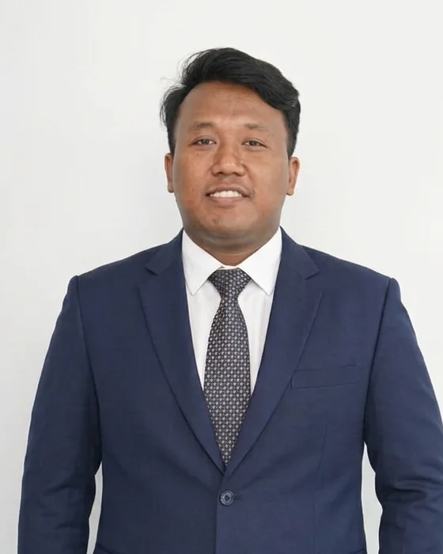

IT professional dengan pengalaman lebih dari 3 tahun di bidang IT, terbiasa mengubah masalah operasional jadi sistem yang jalan setiap hari. Saat ini menangani sistem informasi laboratorium (LIS): integrasi alat lab, instalasi server, dan jaringan lokal laboratorium di rumah sakit dan klinik.

Setiap proyek berangkat dari masalah nyata, di tempat kerja, di perkuliahan, maupun di kompetisi.
MasalahHardware dari gudang yang dikirim ke RS klien sulit dilacak: siapa yang membawa, terpasang di mana, dan apa yang kembali.
SolusiSatu sistem dengan satu login dan database bersama: barang masuk, keluar, dan kembali berbasis tiket, nomor seri dan scan QR, lalu unit yang terpasang otomatis menjadi aset.
HasilAktif dipakai harian: setiap unit bisa dilacak dari gudang sampai lokasi pemasangan.
MasalahData time-series tidak konsisten dan banyak nilai kosong.
SolusiPembersihan data, interpolasi, dan pipeline visualisasi pola krisis dan pemulihan.
HasilPeringkat 32 dari 464 peserta, masuk Top 100 finalis.
MasalahKomputer mati di 6 lokasi (5 klinik dan 1 RS) baru ketahuan setelah staf melapor.
SolusiMonitoring berbasis ping dengan peringatan email otomatis.
HasilLolos uji di banyak lokasi, tidak dilanjutkan karena pindah kerja.